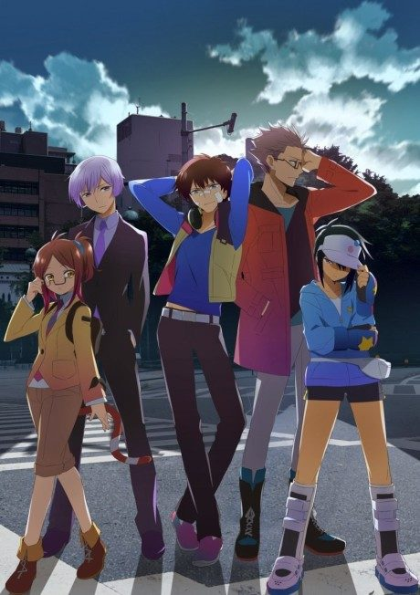

Persona 4 the Animation
ペルソナ4アニメーション
Yu moves to a small town where people are being murdered, and finds he can enter a world inside the TV.
An original anime, so there's no book to continue with.
7.3AniList score
—Animeter, no votes yet
25episodes
Rate it or report where you stopped
Is it worth pushing through?
Built from what visitors report across all 25 episodes.
Loading reports…Checking what other people said about this one.
Sign in above with your email to add your report.
More like Persona 4 the Animation
 Manga Ch. 3408.9
Manga Ch. 3408.9
 Original8.6
Original8.6
 Manga Ch. 2707.9
Manga Ch. 2707.9
 Done7.7
Done7.7
 Manga Ch. 1107.7
Manga Ch. 1107.7
 Done8.8
Done8.8
 Manga Ch. 1088.4
Manga Ch. 1088.4
 Manga Ch. 1117.4
Manga Ch. 1117.4
 Original7.4
Original7.4
 Manga Ch. 11518.7
Manga Ch. 11518.7

Original6.9 Own end7.4
Own end7.4